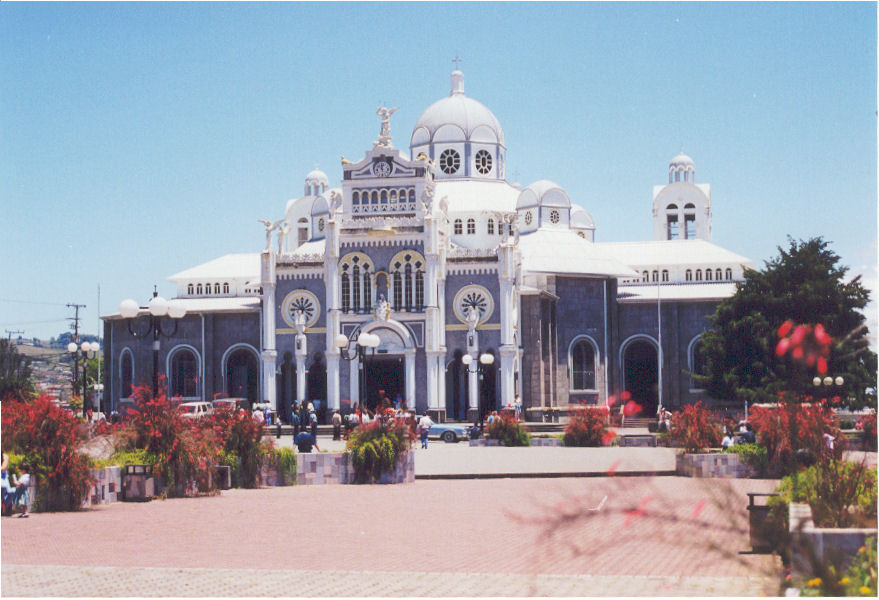

Cartago
Cartago es una de las siete provincias de Costa Rica. Se encuentra enclavada en el centro del país, sin acceso a las costas. Limita al norte y al este con Limón, al oeste y al sur con San José. Su capital, Cartago fue hasta 1823 capital de Costa Rica, durante la colonia y el inicio de la República.
 Volver